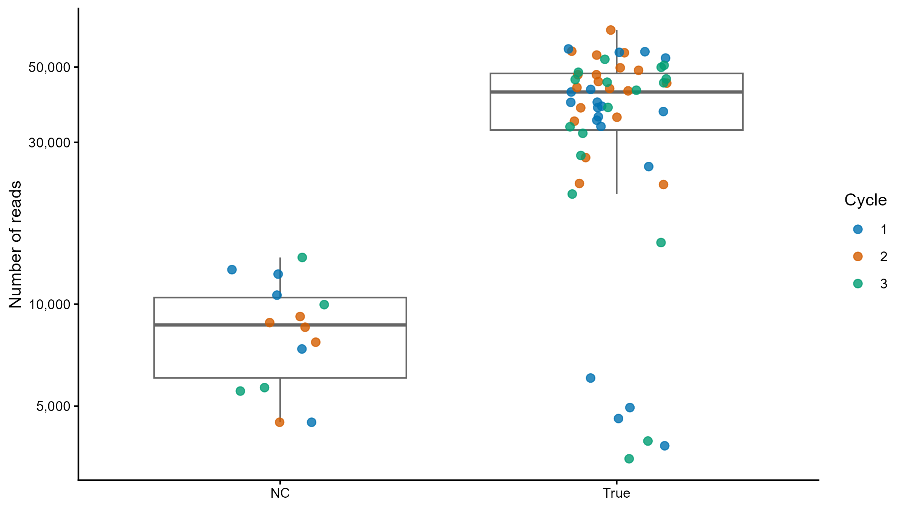
Sample library size
슬라이드 2. 시료 유형별 sequencing depth 확인.
PNG 원본Batch, negative control, decontam method와 threshold를 비교해 control 신호를 줄이면서 피부 유래 신호를 보존하는 조건을 선택한 분석 handoff입니다. PPT 제작 시 아래 순서와 원본 PNG를 그대로 사용할 수 있습니다.
피부 시료 최종 조건: Prep control + Air Swab · Cycle batch aware · Frequency · threshold 0.4
Mock 검증 조건: DNA extraction 단계를 평가하므로 Prep control only
Frequency 0.4에서 상재균 감소율은 Cutibacterium 6.5%, Corynebacterium 0.8%, Lawsonella 0%였고, 대표 control taxa 감소율은 Lepagella 94.5%, Lactobacillus 86.6%, Duncaniella 61.1%였습니다.
Preprocessing에서 생성된 phyloseq의 raw count를 사용했습니다. Pooled observed ASVs는 해당 그룹 전체에서 한 번 이상 검출된 ASV 수이며, Mean ± SD ASVs는 sample별 observed richness의 평균과 표준편차입니다.
| Sample group | N | Read depth, Mean ± SD | Pooled observed ASVs | ASVs per sample, Mean ± SD |
|---|---|---|---|---|
| Total | 73 | 32,525 ± 17,926 | 4,633 | 194 ± 84 |
| True sample | 55 | 37,666 ± 15,407 | 4,149 | 216 ± 85 |
| Control | 14 | 8,650 ± 2,994 | 977 | 136 ± 34 |
| Mock | 4 | 45,392 ± 5,894 | 279 | 102 ± 17 |
| Slide | 제목 | 핵심 메시지 | 권장 그림 |
|---|---|---|---|
| 1 | Background | 피부는 low biomass이므로 control 정의와 threshold가 결과에 직접 영향을 준다. | 연구 디자인 도식은 별도 제작 |
| 2 | Dataset overview | True, NC, PC와 DNA extraction Cycle의 기본 구조를 제시한다. | Library size, PCoA |
| 3 | Batch versus pooled | Cycle을 반영했을 때 control 관련 신호의 검출 양상이 달라진다. | Pooled vs Cycle aware |
| 4 | Threshold sensitivity | 0.5는 최적점이 아니라 True sample 과제거가 뚜렷해지는 경계다. | Sensitivity curve, tradeoff |
| 5 | Method comparison | Prevalence와 Frequency는 서로 대체 가능하지 않으며 method-specific ASV가 존재한다. | Overlap plots |
| 6 | Biological retention | 전체 read와 함께 피부 상재균 및 control taxa 감소율을 평가해야 한다. | True retention and taxa reduction |
| 7 | Mock validation | Cell mock dilution은 low biomass에서 증가하는 background signal을 보조 검증한다. | Dilution candidates, overlap |
| 8 | Final strategy | Combined NC + Cycle aware + Frequency 0.4를 최종 조건으로 선택한다. | Slide 6 그림과 의사결정 표 |

슬라이드 2. 시료 유형별 sequencing depth 확인.
PNG 원본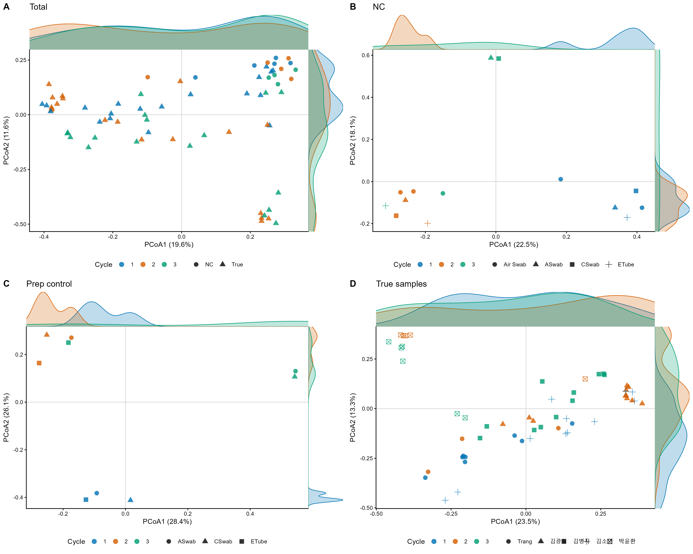
슬라이드 2. Total, NC, PC와 True sample의 군집 구조 및 Cycle 확인.
PNG 원본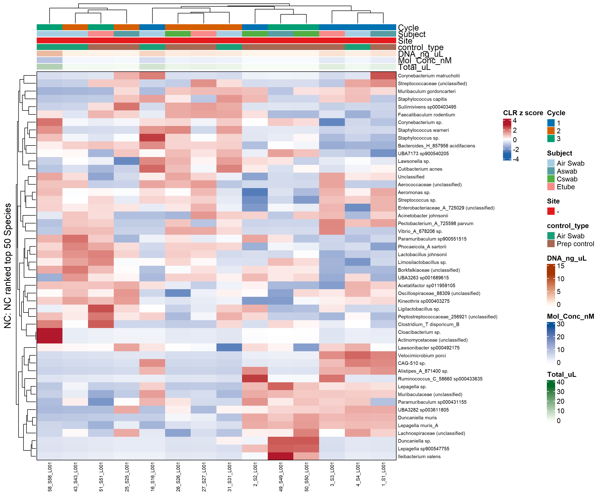
슬라이드 2–3. NC taxa와 Cycle별 조성 차이.
PNG 원본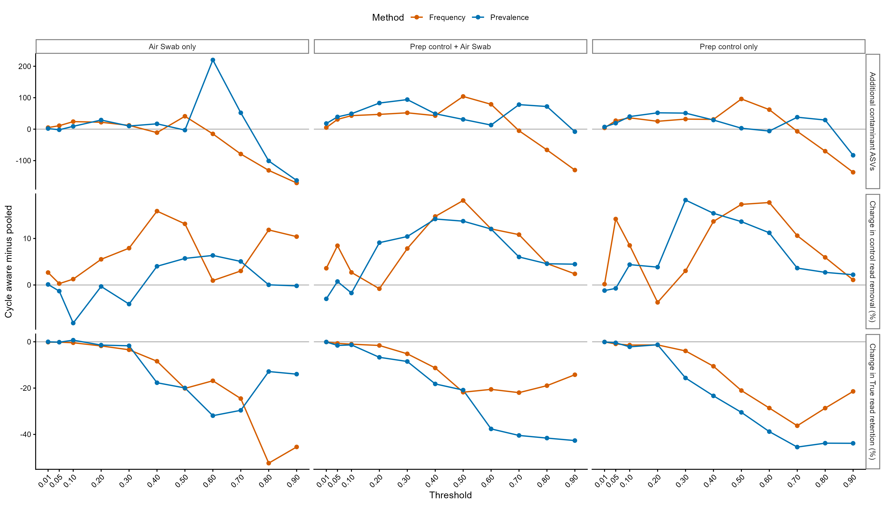
슬라이드 3. Batch를 반영했을 때의 contaminant와 retention 변화.
PNG 원본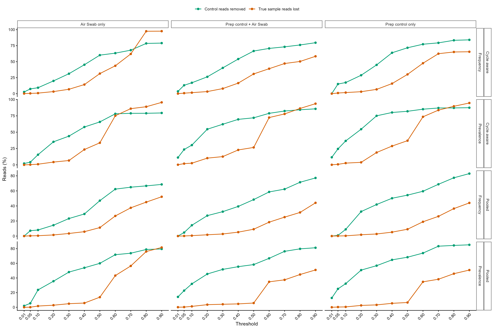
슬라이드 4. Control 제거와 True sample 손실의 threshold별 변화.
PNG 원본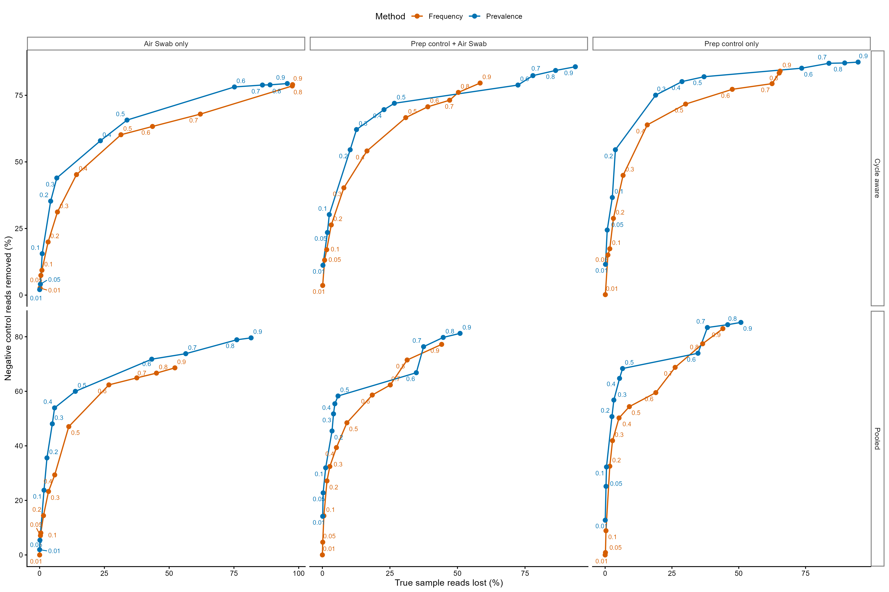
슬라이드 4. Control depletion 대비 biological loss.
PNG 원본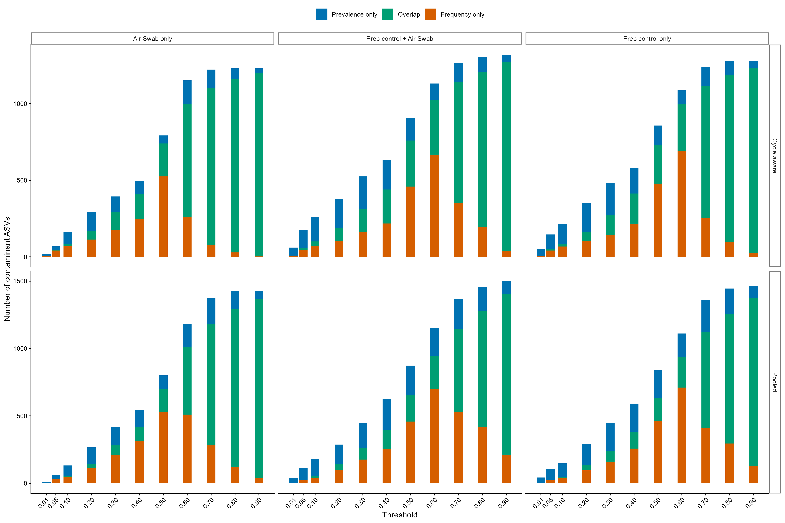
슬라이드 5. 두 방법의 공통 및 고유 contaminant ASV.
PNG 원본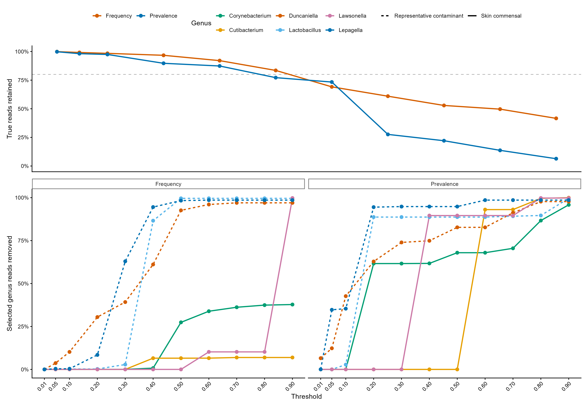
슬라이드 6 및 8. 최종 threshold 결정의 핵심 근거.
PNG 원본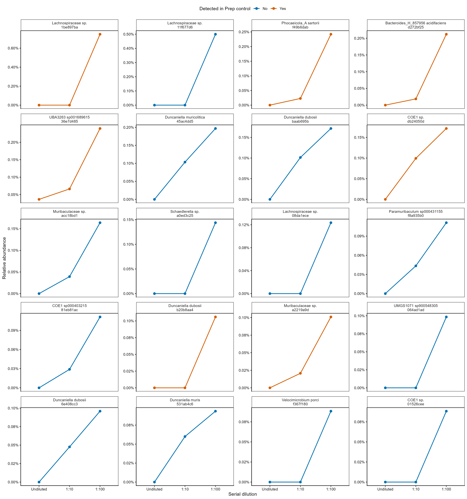
슬라이드 7. 희석할수록 상대 조성이 증가하는 candidate contaminants.
PNG 원본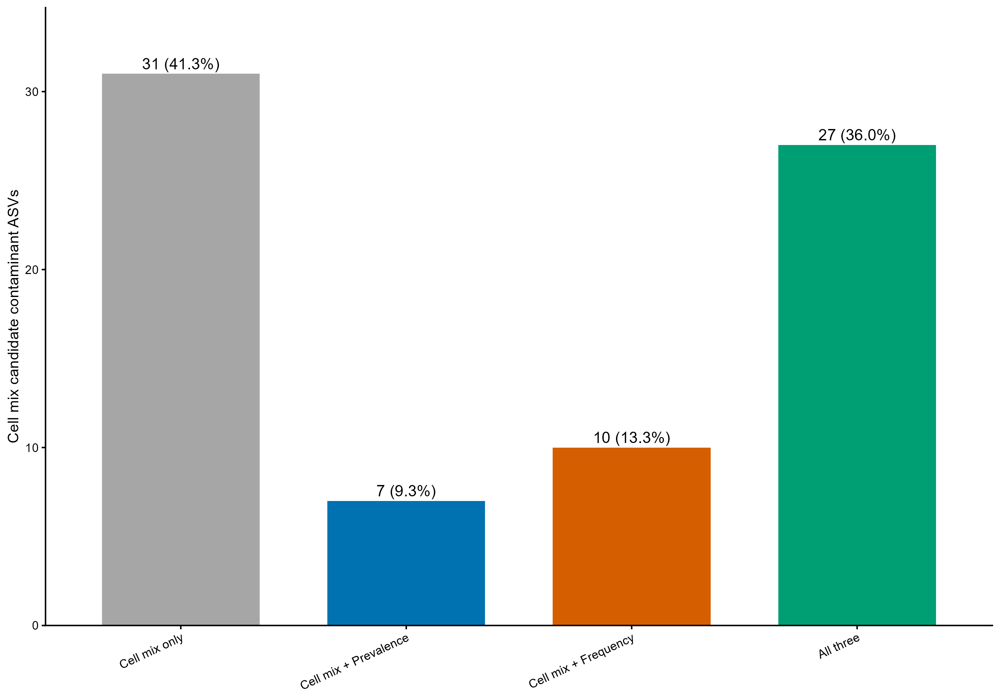
슬라이드 7. Cell mix 후보와 batch aware decontam 후보의 교집합.
PNG 원본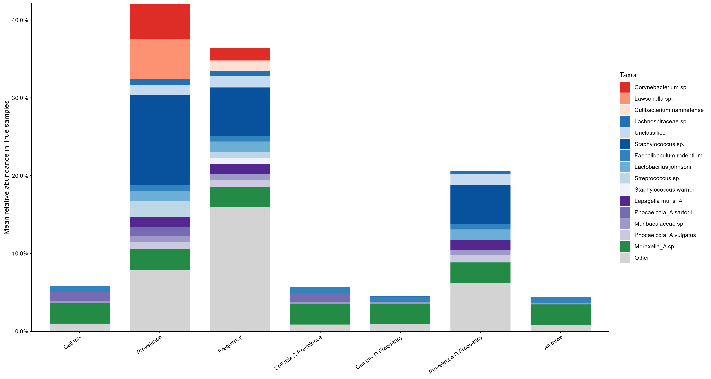
보조 슬라이드. 오염 후보가 실제 피부 시료에서 차지하는 조성.
PNG 원본
보조 슬라이드. Cell/DNA mock의 threshold별 taxonomy 변화.
PNG 원본원자료 확인이나 PPT 수치 입력에는 tables/ 폴더를 사용합니다.
Phyloseq/phy_F270R210_260921.rds를 별도로 전달해야 합니다.